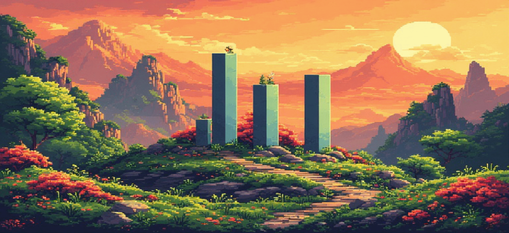

Projects & Works
Overview first, details on demand:
Filter by domain or click any project card to expand full technical breakdowns, key findings, trailers, and playable downloads.

LudaViz PhD Research
FH Hagenberg & University of Regensburg • Investigating Ludic and Diegetic Visualizations in video games.
Featured Deep Dives
Portfolio
naturace VR Simulation
Pro-Noris Nominee
7-pillar climate model, custom spherical C++ coordinates, and 9 animal AI heuristics on a NASA-textured Earth.
Explainable AI (LLMs & MNIST)
~95% Accuracy
Retracing AI outputs to the 42/10,000 most influential training sources solely via neural activations.
Cybersecurity Lab (Docker)
~80 Fake Sites
Try-it-yourself container covering the 80% most common web hacks with exact code-level fixes.